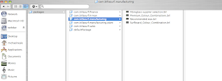

Accessing Guvnor as a Filesystem (WebDAV)
Just checked in to trunk, is the capability to access the repository back end as a filesystem. This is useful for a whole lot of cases (including, for instance, saving Excel directly to the repository). Its also a neat lead into the ability to have files both in the repository for governance and editing, and in the IDE for devlopers (probably lots of other uses as well).
This is using the WebDAV standard (Level 2 compliance). WebDAV is reasonably well supported by most operating systems, many end user applications, and various 3rd party clients (and command line utilities for those so inclined). It works over http(s).
Here is a look-see of how a repository looks in OSX finder:

And here it is in windows (xp) explorer:

How to setup: On the repository side – nothing ! The url to access it is the same as the repository server, with /webdav on the end (instead of any HTML file). You can drill down in the URL if you like, by adding: webdav/packages/
On the client side:
* Mac OSX finder: Press Apple-K, and then enter the URL (it will prompt for some credentials to access the repository).
* Windows XP: Go to “My Network Place”, then “Add a network place” – and use the URL (you can create a shortcut to it on the desktop or wherever.
* Cyberduck: an excellent free client for OSX that works much better then finder (OSX finder is inefficient, and tries to do Naughty Things which gave me no end of grief…)
* Other apps, such as excel, can support webdav URLs more directly if needed.
Versioning:
As the repository is versioned, this is essentially an automatic versioning file system. To avoid millions of trivial little versions being created, it won’t create a version with every little save, it will wait until a certain amount of time has passed before creating a new version in the repository automatically (but you won’t notice anything from the filesystem point of view). If you really want it to create a new version, you can delete it and drag a new copy over again.
Some caveats:
OSX finder will not let you copy and paste (mostly due to its inability to rename copies to anything useful – maybe fixed in a future version of Finder), so don’t try (if you want to copy something, drag it to your mac desktop, rename it, edit etc, and then drag it back).

{kind=link}